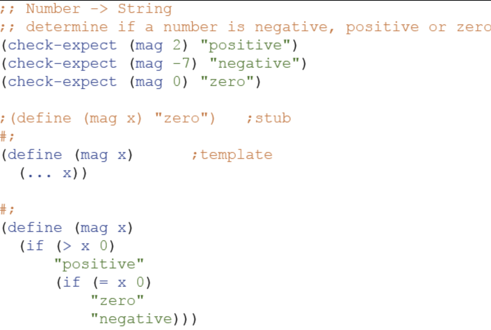
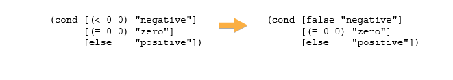
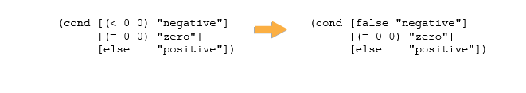
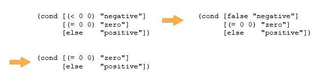
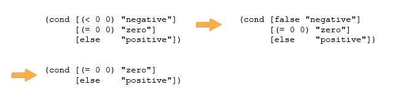
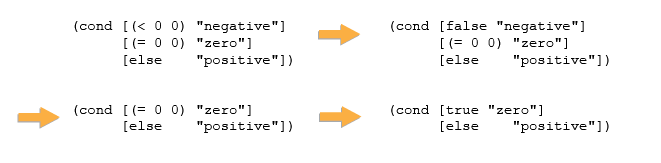
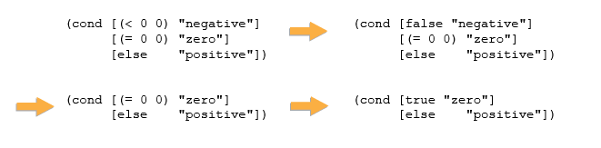
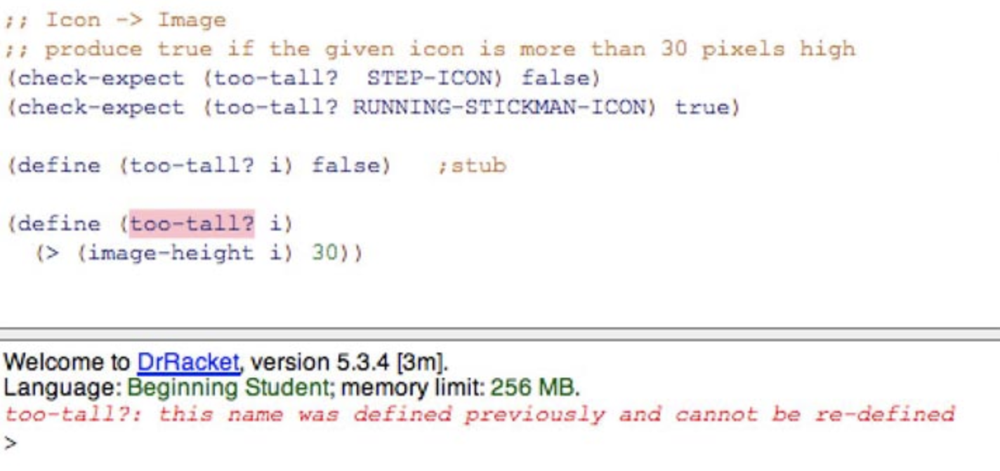
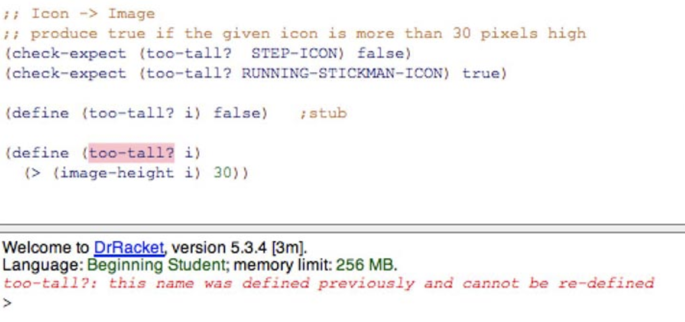

Module 2 Questions
Table of Contents
Created on 2020-08-06/00:41
Module 2 Questions
cond Expressions
- Question 1

Build a cond expression equivalent to the above nested if expressions
(define (mag x) (cond [(> x 0) "positive"] [(= x 0) "zero"] [else "negative"]))
- Question 2
We have seen that
condis used instead ofifwhen we have multiple parallel cases. For example, as seen in Question 1:(define (mag1 x) (if (< x 0) "negative" (if (= x 0) "zero" "positive")))
The above can be re-written as:
(define (mag2 x) (cond [(< x 0) "negative"] [(= x 0) "zero"] [else "positive"]))
- Now let's hand step the call to (mag2 0)
What is the next step of the evaluation of:
(cond [(< 0 0) "negative"] [(= 0 0) "zero"] [else "positive"])
(cond [true "negative"] [(= 0 0) "zero"] [else "positive"])
(cond [false "negative"] [(= 0 0) "zero"] [else "positive"])
(cond [(= 0 0) "zero"] [else "positive"])
- The answer is #2.
- Question 3
- After the previous step of the evaluation we are left with:

- What is the next step of the evaluation?
(cond [(= 0 0) "zero"] [else "positive"])
(cond [false "negative"] [true "zero"] [else "positive"])
"zero"
- The answer is #1.
- What is the next step of the evaluation?
- After the previous step of the evaluation we are left with:

- Question 4
- After the previous step of the evaluation we are left with:

- What is the next step of the evaluation.
(cond [else "positive"])
(cond [true "zero"] [else "positive"])
"zero"
- The answer is #2.
- What is the next step of the evaluation.
- After the previous step of the evaluation we are left with:

- Question 5
- After the previous step of the evaluation we are left with:

- What is the next step of the evaluation?
(cond [true "zero"])
(cond [else "positive"])
"zero"
- The answer is #3.
- What is the next step of the evaluation?
- After the previous step of the evaluation we are left with:

Atomic Non-Distinct
- Question 1
- Complete the following data definition that represents the name of a course by choosing the best answer for each step in the HtDD recipe.
;; CourseName is String;; interp. a string;; interp. a name;; interp. the name of a course<-- The interpretation should describe the correspondence between the information and data.
- Complete the following data definition that represents the name of a course by choosing the best answer for each step in the HtDD recipe.
Question 2
;; CourseName is String ;; interp. the name of a course
(define CN1 "Apple")(define CN1 "Systematic Program Design")<-(define CN1 "This is a string"
Question 3
;; CourseName is String ;; interp. the name of a course (define CN1 "Systematic Program Design")
(define (fn-for-course-name cn) (... cn))
(define (fn-for-course-name cn) (...))
(define (fn-for-course-name cn) "cn")
- Answer is #1.
- Question 4
;; CourseName is String ;; interp. the name of a course (define CN1 "Systematic Program Design") (define (fn-for-course-name cn) (... cn))
;; - atomic non-distinct: course name;; - atomic non-distinct: String<-;; - atomic non-distinct: name
HtDF With Non-Primitive Data
- Question 1
- You are told that the extension you are working on can only accomodate icons that are at most 30 pixels high, so we would like to design a function that checks if an image has a height of more than 30 pixels.
Here is the partial design of too-tall?:
;; Icon -> Boolean ;; produce true if the given icon is more than 30 pixels high (define (too-tall? i) false) ;stub
- What is the minimum number of tests required to design this function?
- 0
- 1
- 2 <-
- 3
- What is the minimum number of tests required to design this function?
Question 2
;; Icon -> Boolean ;; produce true if the given icon is more than 30 pixels high (check-expect (too-tall? STEP-ICON) false) (check-expect (too-tall? RUNNING-STICKMAN-ICON) true) (define (too-tall? i) false) ;stub
- Choose the simplest correct function definition for
too-tall?.(define (too-tall? i) (if (> (image-height i) 30) true false))
(define (too-tall? i) (cond [(> (image-height i) 30) true] [else false]))
(define (too-tall? i) (> (image-height i) 30))
(define (too-tall? i) (> i 30))
- The answer is #3. Only the first three examples will run without error. There are only two cases so
condis unneccessary. Theifstatement can be simplified to (…) from (if … true false).
- The answer is #3. Only the first three examples will run without error. There are only two cases so
- Choose the simplest correct function definition for
- Question 3
- Why are we getting the following error?

- The function should use a different name than the stub.
- The stub should be commented out. <-
- The check-expects should be commented out.
- The symbol ? cannot be used in the function name.
- Why are we getting the following error?

- Question 4
- In the screenshot above, which other part of the function design has an error in it?
- signature <-
- purpose
- examples/tests
- function body
- It should be
;; Icon -> Boolean
- It should be
- In the screenshot above, which other part of the function design has an error in it?
Interval
- Question 1
Integer[2, 6]includes how many numbers?- 3
- 4
- 5 <-
- 6
- Question 2
- Do
Natural[1, 10]andNumber(10, 20]have any numbers in common?- yes
- no
Number(10, 20]excludes the 10.
- Do
Enumeration
- Question 1
- You are asked to design a data definition to represent the seasons of the year: winter, spring, summer, and fall.
- How many subclasses would you have for this data definition?
- 0
- 2
- 4 <-
6
;; Season is one of: ;; - "winter" ;; - "spring" ;; - "summer" ;; - "fall"
- Question 2
- How many examples should you have for this data definition?
- 0 <-
- 2
- 4
- 6
- Examples are redudent in enumeration data definitions, so they are not needed.
- How many examples should you have for this data definition?